Add map items
The HERE SDK allows you to add several types of items to the map, such as map polylines and markers. They are explained in detail in the sections below. Currently, the following map items are supported:
- Map polylines: Non-moveable rendered lines.
- Map arrows: A convenient way to show arrow indicators on the map.
- Map polygons: Non-moveable rendered shapes.
- Map circles: Non-moveable rendered circles that can be defined as geo polygons.
- Map markers: Images that can be pinned to 'mark' specific spots on the map.
- Map marker clustering: A group of map markers that can be clustered dependent on zoom level.
- Embedded POIs: Pickable preconfigured and embedded POI objects (Carto POIs) on the map such as public transit stations, restaurants, ATMs and other facilities.
- Map markers 3D: 3D shapes rendered on the map at the specified geographic coordinates.
- Flat map markers: Flat map markers that rotates and tilt together with the map.
- Location indicator Predefined assets to indicate the current device location on the map.
- Map view pins: A convenient way to show native Flutter
Widgetlayouts on the map.
Polylines, polygons and circles, will adjust their size based on the current zoom level, while markers remain and pins unchanged when zooming.
All map items provide a convenient way to pick them from the map.
Add map polylines
Polylines can be useful to render, for example, a route geometry on the map. They can be created as shown below:
MapPolyline? _createPolyline() {
List<GeoCoordinates> coordinates = [];
coordinates.add(GeoCoordinates(52.53032, 13.37409));
coordinates.add(GeoCoordinates(52.5309, 13.3946));
coordinates.add(GeoCoordinates(52.53894, 13.39194));
coordinates.add(GeoCoordinates(52.54014, 13.37958));
GeoPolyline geoPolyline;
try {
geoPolyline = GeoPolyline(coordinates);
} on InstantiationException {
// Thrown when less than two vertices.
return null;
}
double widthInPixels = 20;
Color lineColor = Color.fromARGB(160, 0, 144, 138);
MapPolyline? mapPolyline;
try {
mapPolyline = MapPolyline.withRepresentation(
geoPolyline,
MapPolylineSolidRepresentation(
MapMeasureDependentRenderSize.withSingleSize(RenderSizeUnit.pixels, widthInPixels),
lineColor,
LineCap.round));
} on MapPolylineRepresentationInstantiationException catch (e) {
print("MapPolylineRepresentation Exception:" + e.error.name);
} on MapMeasureDependentRenderSizeInstantiationException catch (e) {
print("MapMeasureDependentRenderSize Exception:" + e.error.name);
}
return mapPolyline;
}
A MapPolyline consists of three elements:
- A list of two or more geographic coordinates that define where to place the polyline on the map.
- A
GeoPolylinethat contains this list of coordinates. - Style parameters such as
DashPatternorLineCapto define how to visualize the polyline.
Since a geometric line is defined by two or more points, you need to create an ArrayList, which must contain at least two GeoCoordinates. Otherwise, an exception will be thrown. To change the look of the line, its thickness in pixels and color can be set. See for an example the screenshot.
After you have created one or more map polylines, you can add them to a map scene with:
_mapScene = hereMapController.mapScene;
_mapPolyline = _createPolyline();
_mapScene.addMapPolyline(_mapPolyline!);
If a map polyline instance is already attached to a map scene, any further attempt to add it again will be ignored.
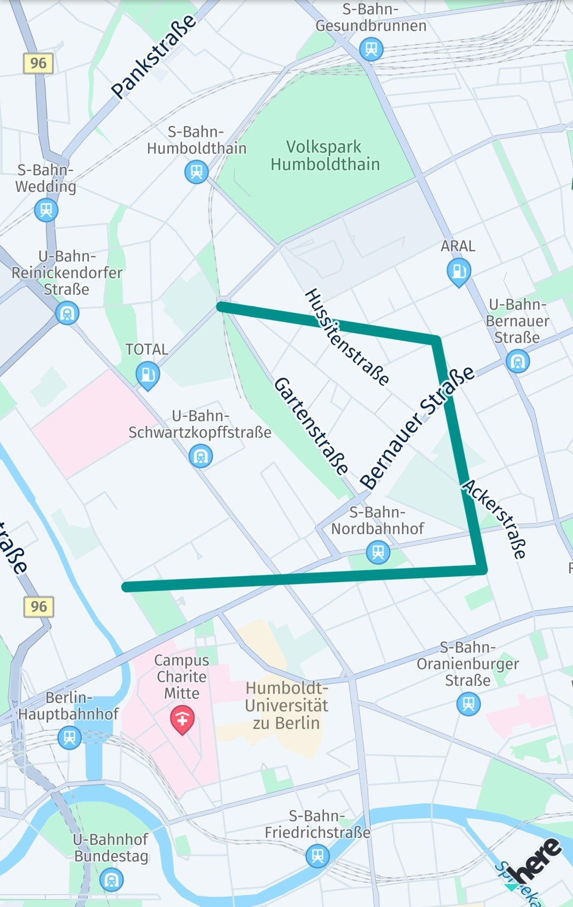
Note that a map view allows only one scene and all map items are placed directly on it. If you want to group your map items, you may want to organize them by using an array and add or remove them individually.
You can remove a mapPolyline from the map immediately by calling:
_mapScene.removeMapPolyline(_mapPolyline!);
Note
MapPolyline items are pickable and it is possible to store the Metadata that can be retrieved when picking the item. For an example, see the section below on map markers.
By setting a list of MapMeasureRange items, the visibility for a MapPolyline can be adjusted dependent on the current zoom level.
Note
By setting a draw order, you can specify what item is rendered on top of each other. Note that as of now, setting a draw order is not having an affect in relation to other map items as it only defines the order within the same type of class.
By specifying a DrawOrderType, you can further optimize the experience. For example, with DrawOrderType.mapSceneAdditionOrderIndependent you can specify that the draw order should not depend on the order of when an item is added. Instead, multiple map items of the same type with the same draw order can be drawn in an arbitrary order and map items with similar attributes like color can be grouped and drawn together all at once to improve the rendering performance.
Note that map polylines can be also rendered dashed. Use MapPolyline.DashImageRepresentation to set a dashed pattern style.
Add map arrows
Map arrows behave similar to MapPolyline items, they consist of a polyline with an arbitrary number of points, but show an arrow tip at its end. Map arrows are only visible on zoom levels above 13. They can be useful do indicate directions on the map - for example, when rendered on parts of a route geometry.
MapArrow? _createMapArrow() {
List<GeoCoordinates> coordinates = [];
coordinates.add(GeoCoordinates(52.53032, 13.37409));
coordinates.add(GeoCoordinates(52.5309, 13.3946));
coordinates.add(GeoCoordinates(52.53894, 13.39194));
coordinates.add(GeoCoordinates(52.54014, 13.37958));
GeoPolyline geoPolyline;
try {
geoPolyline = GeoPolyline(coordinates);
} on InstantiationException {
// Thrown when less than two vertices.
return null;
}
double widthInPixels = 20;
Color lineColor = Color.fromARGB(160, 0, 144, 138);
MapArrow mapArrow = MapArrow(geoPolyline, widthInPixels, lineColor);
return mapArrow;
}
A MapArrow consists of three elements:
- A list of two or more geographic coordinates that define where to place the polyline on the map.
- A
GeoPolylinethat contains this list of coordinates. - Style parameters such as
colororwidthInPixelsto define how to visualize the arrow.
Since a geometric line is defined by two or more points, you need to create an array, which must contain at least two GeoCoordinates. Otherwise, an exception will be thrown. To change the look of the line, its thickness in pixels and color can be set. See for an example the screenshot.
After you have created one or more map arrows, you can add them to a map scene with:
_mapScene = hereMapController.mapScene;
_mapArrow = _createMapArrow();
_mapScene.addMapArrow(_mapArrow!);
If a map arrow instance is already attached to a map scene, any further attempt to add it again will be ignored.
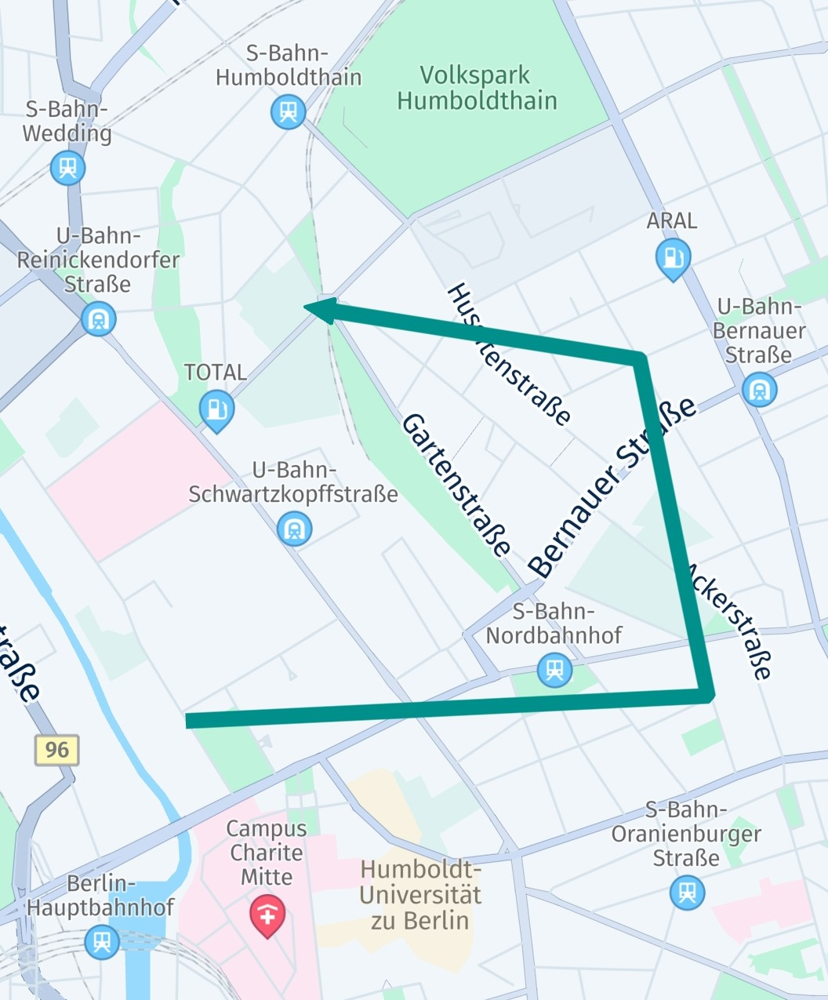
Note, a map view allows only one scene and all map items are placed directly on it. If you want to group your map items, you may want to organize them by using an array and add or remove them individually.
You can remove a mapArrow from the map immediately by calling:
_mapScene.removeMapArrow(_mapArrow!);
Note
MapArrow items are pickable and it is possible to store the Metadata that can be retrieved when picking the item. For an example, see the section below on map markers.
Add map polygons
A MapPolygon is a shape that consists of at least three coordinates, otherwise it cannot be rendered. Similar to MapPolyline, the coordinates are connected. Polygons can be useful to highlight an area on the map.
Note
The order of the coordinates is important.
See the example below on how a polygon can be created. The coordinates are connected based on their clockwise order in the list. The resulting shape can be filled with a color:
MapPolygon? _createPolygon() {
List<GeoCoordinates> coordinates = [];
// Note that a polygon requires a clockwise or counter-clockwise order of the coordinates.
coordinates.add(GeoCoordinates(52.54014, 13.37958));
coordinates.add(GeoCoordinates(52.53894, 13.39194));
coordinates.add(GeoCoordinates(52.5309, 13.3946));
coordinates.add(GeoCoordinates(52.53032, 13.37409));
GeoPolygon geoPolygon;
try {
geoPolygon = GeoPolygon(coordinates);
} on InstantiationException {
// Less than three vertices.
return null;
}
Color fillColor = Color.fromARGB(160, 0, 144, 138);
MapPolygon mapPolygon = MapPolygon(geoPolygon, fillColor);
return mapPolygon;
}
A MapPolygon consists of three elements:
- A list of three or more geographic coordinates that define where to place the polygon on the map.
- A
GeoPolygonthat contains this list of coordinates. - A
Colorto define the fill color of the polygon area.
Since a polygon is defined by three or more points, you need to create an array list, which must contain at least three GeoCoordinates. Otherwise, an exception will be thrown. See for an example the screenshot.
Map polygons can be used to create complex filled or unfilled shapes. However, a self-intersecting polygon can lead to undesired results as the coordinates are connected in the order of the list. As an alternative you can add multiple polygons - or make sure to add the coordinates as they appear on the outline of the desired shape.
Please note that, unlike a map polyline, the outline of a map polygon is connected automatically between the last coordinate and the first coordinate of the list.
After you have created one or more map polygons, you can add them to a map scene with:
_mapScene = hereMapController.mapScene;
_mapPolygon = _createPolygon();
_mapScene.addMapPolygon(_mapPolygon!);
If a map polygon is already attached to a map scene, any further attempt to add it again will be ignored.
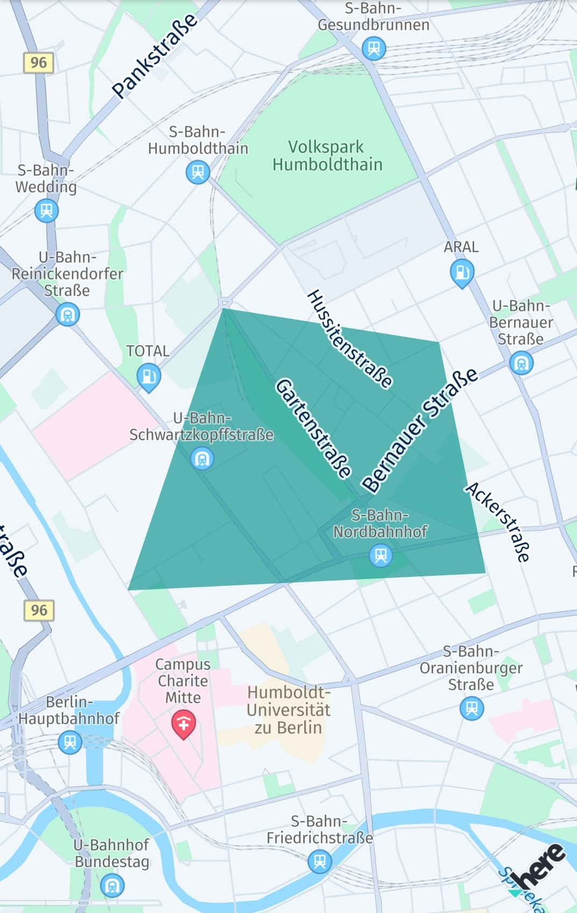
Note that a map view allows only one scene and all map items are placed directly on it. If you want to group your map items, you may want to organize them by using an array and add or remove them individually.
A mapPolygon can be removed immediately from the map by calling:
_mapScene.removeMapPolygon(_mapPolygon!);
Note
MapPolygon items are pickable and it is possible to store Metadata that can be retrieved when picking the item. For an example, see the section below on map markers.
By setting a list of MapMeasureRange items, the visibility for a MapPolygon can be adjusted dependent on the current zoom level.
Note
By setting a draw order, you can specify what item is rendered on top of each other. Note that as of now, setting a draw order is not having an affect in relation to other map items as it only defines the order within the same type of class.
Add map circles
A circular shape can be useful to highlight areas on the map, draw a transparent halo - or to mark a distinct spot on the map. Circles are technically rendered as a sequence of triangular polygon shapes.
Consequently, circles can be created as a MapPolygon instance using a GeoCircle:
MapPolygon _createMapCircle() {
double radiusInMeters = 300;
GeoCircle geoCircle = GeoCircle(GeoCoordinates(52.530932, 13.384915), radiusInMeters);
GeoPolygon geoPolygon = GeoPolygon.withGeoCircle(geoCircle);
Color fillColor = Color.fromARGB(160, 0, 144, 138);
MapPolygon mapPolygon = MapPolygon(geoPolygon, fillColor);
return mapPolygon;
}
Since a circle is a special shape of a polygon, you can add (or remove) a circle to (or from) a map scene as already shown above in the MapPolygon section.
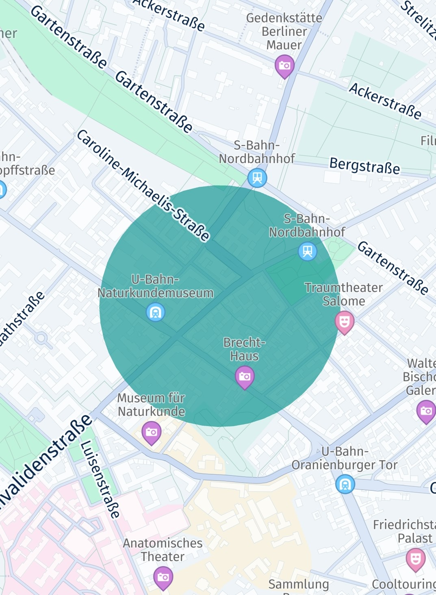
Add map markers
You can use map markers to precisely point to a location on the map. Map markers will always be drawn on top of anything else that is rendered on the map.
The following code will add a map marker to the map:
MapImage _photoMapImage;
...
// Reuse existing MapImage for new map markers.
if (_photoMapImage == null) {
Uint8List imagePixelData = await _loadFileAsUint8List('assets/here_car.png');
_photoMapImage = MapImage.withPixelDataAndImageFormat(imagePixelData, ImageFormat.png);
}
MapMarker mapMarker = MapMarker(geoCoordinates, _photoMapImage!);
mapMarker.drawOrder = drawOrder;
_hereMapController.mapScene.addMapMarker(mapMarker);
In this example, we load a PNG ("here_car.png") from the resources and create a MapImage out of it. This MapImage can then be set to a MapMarker instance.
Above we load the image with its default pixel size. By using MapImage.withImageDataImageFormatWidthAndHeight(Uint8List imageData, ImageFormat imageFormat, int width, int height) you can set a custom size.
The PNG asset is stored into an asset folder we have specified in the pubspec.yaml file:
assets:
- assets/
Load the image data with the following helper method:
Future<Uint8List> _loadFileAsUint8List(String assetPathToFile) async {
// The path refers to the assets directory as specified in pubspec.yaml.
ByteData fileData = await rootBundle.load(assetPathToFile);
return Uint8List.view(fileData.buffer);
}
Alternatively, to load the image synchronously, use the following code and specify the path to the image:
void _addMapMarker(GeoCoordinates geoCoordinates) {
int imageWidth = 60;
int imageHeight = 60;
MapImage mapImage = MapImage.withFilePathAndWidthAndHeight("assets/green_dot.png", imageWidth, imageHeight);
MapMarker mapMarker = MapMarker(geoCoordinates, mapImage);
_hereMapController.mapScene.addMapMarker(mapMarker);
}
By using withFilePathAndWidthAndHeight() you can also set custom imageWidth and imageHeight values to scale the image. However, even if you do not know the default size of an image, setting a size is required when loading an image from a file path.
Tip: You can reuse the same mapImage instance for other MapMarker instances to save resources.
Note
The HERE SDK for Flutter supports PNG and SVG Tiny resources with or without transparency (alpha channel). Note that an image can be added in different resolutions to the project. The Flutter platform will then choose the appropriate image resolution based on the device's display density. See the Flutter documentation for more details.
In opposition to static image assets, SVG assets can be also useful to show varying content - as only the XML content of the SVG assets needs to be updated. Static image assets and SVG assets can be updated on the fly. As an alternative, for more complex content, consider to use MapViewPins (see below).
To see the image, we must add the MapMarker to a map scene. Please note that the MapImage will be displayed centered on the provided geoCoordinates.
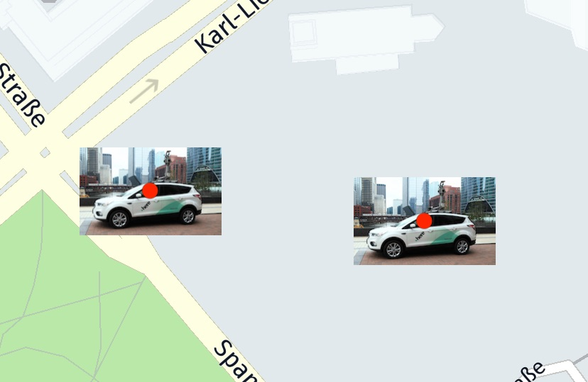
You can also update the geoCoordinates after the marker is added to the map: it will instantly appear at the new location after mapMarker.setCoordinates() is called.
Note
The chronological order in which map markers are added to the map determines what marker is rendered first. This can be adjusted by setting an explicit draw order. Note that as of now, setting a draw order is not having an affect in relation to other map items as it only defines the order within the same type of class.
If you want to remove a MapMarker, simply call:
_hereMapController.mapScene.removeMapMarker(_mapMarkers);
You can also remove a list of map markers of type List<MapMarker> at once:
_hereMapController.mapScene.removeMapMarkers(_mapMarkerList);
Likewise, you can add multiple map markers in a batch call via addMapMarkers(mapMarkerList).
The HERE SDK offers also highly customizable animation support for MapMarker items. A fade in-out animation can be applied with one line of code:
// Optionally, enable a fade in-out animation.
mapMarker.fadeDuration = Duration(seconds: 3);
Whenever the marker is added or removed to the MapView, the animation will fade-in or fade-out the marker. The animation will also play when a marker was moved back to the viewport, that is when the marker becomes visible again by panning the map.
Advanced custom animations, like moving markers, are possible with the MapMarkerAnimation class.
By setting a list of MapMeasureRange items, the visibility for a MapMarker can be adjusted dependent on the current zoom level.
On top, more features are available, for example, you can also make a marker transparent by setting an opacity value.
Retina Support for Different Resolutions
Whereas SVG images can be scaled without loosing the quality of your images, for pixel-based image formats such as PNGs, the Flutter platform offers retina support natively by providing resolution-aware folders for different pixel densities in the pubspec.yaml:
assets/poi.png- Default (mdpi). Asset size, for example: 100 x 100 pixels.assets/2.0x/poi.png- For retina displays (xhdpi). Asset size doubled: 200 x 200 pixels.assets/3.0x/poi.png- For retina HD displays (xxhdpi). Asset size tripled: 300 x 300 pixels.- ...
With the use of AssetImage, Flutter is able to map the asset based on the screen density (Image(image: AssetImage('poi.png'))). However, this is not yet supported by the HERE SDK. Instead when loading an image, you need to specify the path and the dimensions, dependent on the actual screen size in pixels. You can query the device's screen size in pixels like this:
var w = window.physicalSize.width;
var h = window.physicalSize.height;
For example, on a device with retina HD, call MapImage.withFilePathAndWidthAndHeight("assets/3.0x/poi.png", imageWidth, imageHeight) so that the resulting image will have the same size on screen, but with a higher quality asset on bigger screens. Note that such an effort makes sense if you have created assets that show more details for higher resolutions. If you omit resolution dependent assets, you can simply scale the asset at creation time by adjusting imageWidth and imageHeight.
Anchored POI markers
By default, each image is centered on the location provided, and you may want to change this for some types of markers. An example is the POI marker, which usually points to the location with its bottom-middle position.
Therefore, the location of where the image is rendered must be shifted. The default center lies at (0.5, 0.5). If the bottom-right corner of the view should point to the set GeoCoordinates location, then the anchor point must be set to (1, 1).
Anchor points provide a convenient way to specify the location where a marker should be rendered: the top-left corner equals an anchor point of (0, 0) while the bottom-right corner equals an anchor point of (1, 1). Independent of how large the view is, the point that is half the width or height will always be 0.5 - this is similar to the concept of normalized texture UV-coordinates.
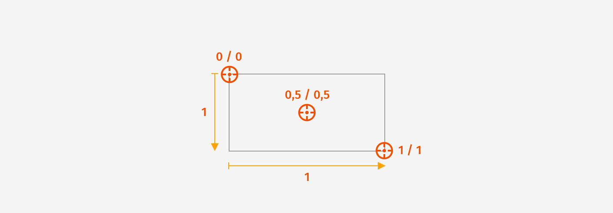
If you want to shift the POI to point to the location, you can keep the default middle location (0.5), but you must shift the image upwards by 1. 1 is just as long as the height of the image. Note that you can also specify values greater than 1 or less than 0, so that you can shift the image to any possible location. 2 would represent twice the height of the image and so on.
To add an anchored POI marker to the map, see the example below:
MapImage _poiMapImage;
...
// Reuse existing MapImage for new map markers.
if (_poiMapImage == null) {
Uint8List imagePixelData = await _loadFileAsUint8List('assets/poi.png');
_poiMapImage = MapImage.withPixelDataAndImageFormat(imagePixelData, ImageFormat.png);
}
// By default, the anchor point is set to 0.5, 0.5 (= centered).
// Here the bottom, middle position should point to the location.
Anchor2D anchor2D = Anchor2D.withHorizontalAndVertical(0.5, 1);
MapMarker mapMarker = MapMarker.withAnchor(geoCoordinates, _poiMapImage!, anchor2D);
_hereMapController.mapScene.addMapMarker(mapMarker);
Note that an image can be added in different resolutions to the project. The Flutter platform will then choose the appropriate image resolution based on the device's display density. See the Flutter documentation for more details.
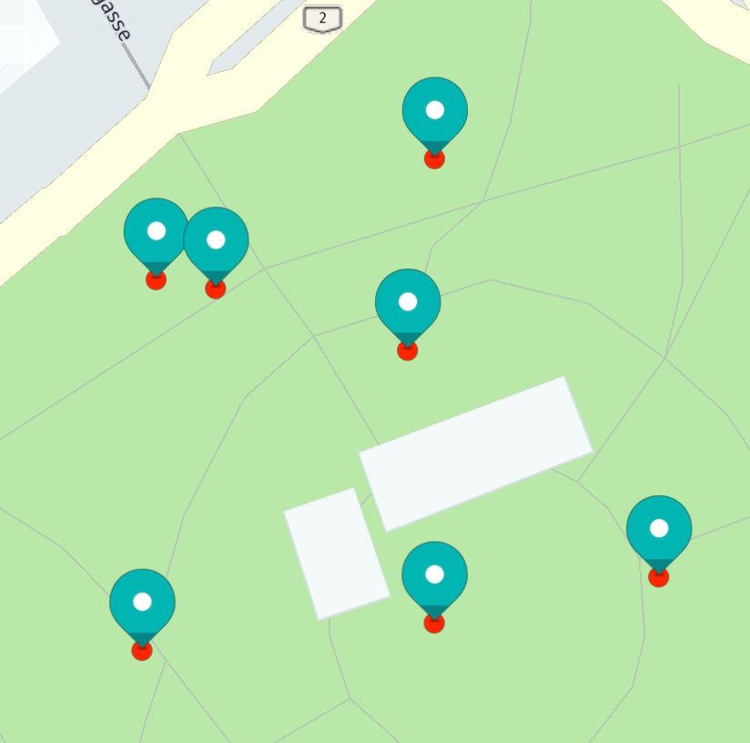
Unlike polylines, each MapImage will keep its size - regardless of how much the map is zoomed in or out.
Map marker with text
A MapMarker can optionally display a string with customizable style options, including outline color and text size.
You can set the string at any time by calling mapMarker.text = "Hello Text". Additionally, you can update the text for an existing marker dynamically.
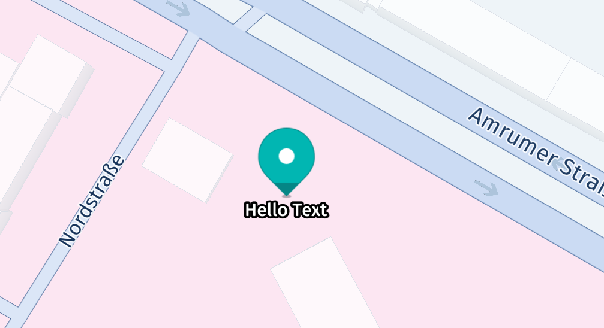
The below example shows how to make use of the available TextStyle options:
MapMarkerTextStyle textStyleCurrent = mapMarker.textStyle;
MapMarkerTextStyle textStyleNew = mapMarker.textStyle;
double textSizeInPixels = 30;
double textOutlineSizeInPixels = 5;
// Placement priority is based on order. It is only effective when
// overlap is disallowed. The below setting will show the text
// at the bottom of the marker, but when the marker or the text overlaps
// then the text will swap to the top before the marker disappears completely.
// Note: By default, markers do not disappear when they overlap.
List<MapMarkerTextStylePlacement> placements = [];
placements.add(MapMarkerTextStylePlacement.bottom);
placements.add(MapMarkerTextStylePlacement.top);
mapMarker.isOverlapAllowed = false;
try {
textStyleNew = MapMarkerTextStyle.make(
textSizeInPixels,
textStyleCurrent.textColor,
textOutlineSizeInPixels,
textStyleCurrent.textOutlineColor,
placements);
} on MapMarkerTextStyleInstantiationException catch (e) {
// An error code will indicate what went wrong, for example, when negative values are set for text size.
print("TextStyle: Error code: ${e.error.name}");
}
mapMarker.text = "Hello Text";
mapMarker.textStyle = textStyleNew;
You can set the options as a list to define the priority for relocating text when multiple MapMarker items, with or without text, overlap. The first item in the list represents the default placement. As markers move closer, such as when zooming out, overlapping text will shift to the next available position in the list, until the marker and text completely disappear. Note that for placement priority to work, you must also call mapMarker.isOverlapAllowed = false. By default, markers can overlap, and the text is shown only at the bottom. A single placement option means that the placement will not change.
Pick map markers
After you have added the map markers onto the map, you can use a tap gesture listener to find out if a user tapped on a map marker:
void _setTapGestureHandler() {
_hereMapController.gestures.tapListener = TapListener((Point2D touchPoint) {
_pickMapMarker(touchPoint);
});
}
void _pickMapMarker(Point2D touchPoint) {
double radiusInPixel = 2;
_hereMapController.pickMapItems(touchPoint, radiusInPixel, (pickMapItemsResult) {
if (pickMapItemsResult == null) {
// Pick operation failed.
return;
}
List<MapMarker> mapMarkerList = pickMapItemsResult.markers;
if (mapMarkerList.length == 0) {
print("No map markers found.");
return;
}
MapMarker topmostMapMarker = mapMarkerList.first;
// ...
});
}
As soon as the tap gesture is detected, we can use the view coordinates of the tapped location on the screen to ask the map view for any map markers around that location. In most cases, specifying a radius of two pixels is adequate. Then the PickMapItemsCallback provides access to the map items found, such as a MapPolygon or a MapMarker.
Note
By convention, the HERE SDK uses listeners for reoccurring events such as gesture events. Single events, that must be handled only one time, require a callback.
When picking items of the same type, you can compare the instances by calling the overridden equals()-method.
Adding metadata
In many cases, users may want to interact with the shown markers - for example, by tapping on a search result to see more details about a restaurant. For this purpose, a MapMarker can hold an instance of the Metadata class, so it is possible to attach various types of data to it - even custom types are supported.
Metadata can hold several key/value pairs. Below, we create a new key named "key_poi" and set a String as the value containing the information about the type of the marker:
Metadata metadata = Metadata();
metadata.setString("key_poi", "Metadata: This is a POI.");
mapMarker.metadata = metadata;
Certainly, you can set any information you may need. The moment we want to read the contents of a Metadata instance, we simply ask for the data stored for a key, which is "key_poi" in our example:
MapMarker topmostMapMarker = mapMarkerList.first;
Metadata? metadata = topmostMapMarker.metadata;
if (metadata != null) {
String message = metadata.getString("key_poi") ?? "No message found.";
_showDialog("Map Marker picked", message);
return;
}
A MapMarker instance, by default, does not contain Metadata and mapMarker.metadata may return null. The data accessed by a key can be null as well, if the Metadata object does not contain such information.
If it does, we look for the String stored for our key "key_poi" and call a helper method to present the contained String to the user. You can choose any string as a key based on your preference, but use a unique key, or you will otherwise overwrite the content stored for a different data item. To see the full example's source code, please check the "map_marker_app" example on GitHub.
Note
You can also store custom objects into the Metadata using the CustomMetadataValue interface. An example can be found in the Search section where a search result data object is stored as a whole.
Add map marker cluster
Depending on zoom level, multiple MapMarker items can overlap. With the MapMarkerCluster class you can group multiple MapMarker items to a group that can reduce the visual clutter. Markers that are overlapping will be replaced by a single image representation. Such a cluster image can be picked and contains only the markers that are contained within.
The code below shows how a cluster containing multiple MapMarker items can be created:
Future<void> showMapMarkerCluster() async {
// Reuse existing MapImage for new map markers.
if (_blueSquareMapImage == null) {
Uint8List imagePixelData = await _loadFileAsUint8List('assets/green_square.png');
_blueSquareMapImage = MapImage.withPixelDataAndImageFormat(imagePixelData, ImageFormat.png);
}
// Defines a text that indicates how many markers are included in the cluster.
MapMarkerClusterCounterStyle counterStyle = MapMarkerClusterCounterStyle();
counterStyle.textColor = Colors.black;
counterStyle.fontSize = 40;
counterStyle.maxCountNumber = 9;
counterStyle.aboveMaxText = "+9";
MapMarkerCluster mapMarkerCluster =
MapMarkerCluster.WithCounter(MapMarkerClusterImageStyle(_blueSquareMapImage!), counterStyle);
_hereMapController.mapScene.addMapMarkerCluster(mapMarkerCluster);
_mapMarkerClusterList.add(mapMarkerCluster);
for (int i = 0; i < 10; i++) {
mapMarkerCluster.addMapMarker(await _createRandomMapMarkerInViewport(i.toString()));
}
}
You can set a MapImage that should be used to represent a cluster of two or more overlapping map markers.
Note that MapMarker items can be added or removed to a MapMarkerCluster that is already shown on the map. If you want the remove the cluster including all markers call:
_hereMapController.mapScene.removeMapMarkerCluster(mapMarkerCluster);
MapMarker items contained in a cluster are not part of pickMapItemsResult.markers. Therefore, we can pick them separately with the code as shown below - after we have received the pick result from our pickMapItems() call (see MapMarker section):
void _handlePickedMapMarkerClusters(PickMapItemsResult pickMapItemsResult) {
List<MapMarkerClusterGrouping> groupingList = pickMapItemsResult.clusteredMarkers;
if (groupingList.length == 0) {
return;
}
MapMarkerClusterGrouping topmostGrouping = groupingList.first;
int clusterSize = topmostGrouping.markers.length;
if (clusterSize == 0) {
// This cluster does not contain any MapMarker items.
return;
}
if (clusterSize == 1) {
_showDialog("Map marker picked",
"This MapMarker belongs to a cluster. Metadata: " + _getClusterMetadata(topmostGrouping.markers.first));
} else {
String metadata = "";
topmostGrouping.markers.forEach((element) {
metadata += _getClusterMetadata(element);
metadata += " ";
});
int totalSize = topmostGrouping.parent.markers.length;
_showDialog(
"Map marker cluster picked",
"Number of contained markers in this cluster: $clusterSize." +
"Contained Metadata: " +
metadata +
". " +
"Total number of markers in this MapMarkerCluster: $totalSize.");
}
}
String _getClusterMetadata(MapMarker mapMarker) {
Metadata? metadata = mapMarker.metadata;
String message = "No metadata.";
if (metadata != null) {
String? string = metadata.getString("key_cluster");
if (string != null) {
message = string;
}
}
return message;
}
With this code you can detect if a cluster was picked and inform the user of the contained markers. You can also identify a single MapMarker instance if the markers list is containing only one item.
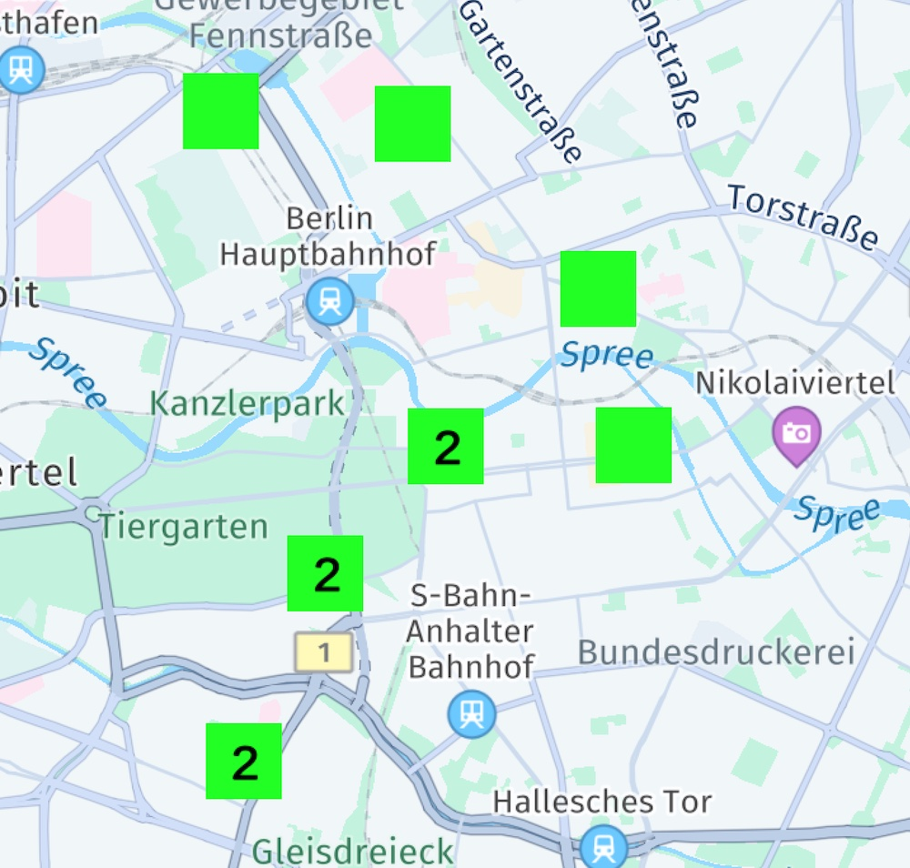
Usually, only a single MapMarkerCluster instance is needed and above we handle only the topmost cluster.
Depending on the distance of the markers, multiple cluster images can appear for the same MapMarkerCluster instance - each containing a subset of the total number of clustered markers.
See the "map_items_app" app for an example on GitHub.
Add 3D map markers
The HERE SDK allows to add custom 3D models onto the map. Optionally, these models can be textured together with a blend Color. The common .obj file format is used to specify the geometry of the 3D model. You can generate it with common 3D modeling software - for example, with the free Three.js online editor.
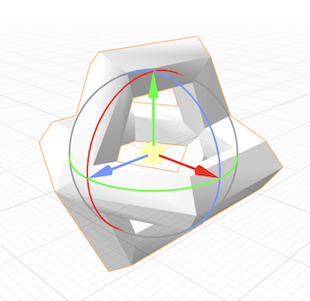
The obj file format specifies the vertices, normals, texture coordinates and faces to define how the model will be rendered. The resulting model can be moved around the map by updating its coordinates. Its orientation can be changed by updating its bearing, pitch and roll.
Note that the HERE SDK does not support material files (*.mtl) and multi texturing.
Once you have a model defined in the obj format and a texture to wrap around the model, add both files to an assets directory in your project, as specified in your pubspec.yaml, for example:
assets:
- assets/
- assets/models/
Below we added one obj file and a PNG texture:
- ../assets/models/obstacle.obj
- ../assets/models/obstacle_texture.png

Now you can use the following code to add a MapMarker3D to the map:
// Place the files in the "assets" directory as specified in pubspec.yaml.
// Adjust file name and path as appropriate for your project.
String geometryFilePath = "assets/models/obstacle.obj";
String textureFilePath = "assets/models/obstacle_texture.png";
// Optionally, consider to store the model for reuse (like we showed for MapImages above).
MapMarker3DModel mapMarker3DModel = MapMarker3DModel.withTextureFilePath(geometryFilePath, textureFilePath);
MapMarker3D mapMarker3D = MapMarker3D(geoCoordinates, mapMarker3DModel);
mapMarker3D.scale = 6;
mapMarker3D.isDepthCheckEnabled = true;
_hereMapController.mapScene.addMapMarker3d(mapMarker3D);
Above, we pass both asset files to the MapMarker3DModel constructor that defines the model. Similarly, like we have already seen for MapImage elements, you can pass the model to one of the available MapMarker3D constructors. Note that we also set a scale factor to let the model appear 6x bigger. Since the obj model is defined in a 3D coordinate space, it does not contain length units.
You can add and remove MapMarker3D items like other map items via MapScene.
Note
The texture must be at least of 1 pixel in size. If you add a transparent pixel as texture image, you can blend the untextured model with a Color that can be passed as third parameter to the MapMarker3DModel constructor.
Below you can see an example of how it may appear. The model will be centered on the provided geographic coordinates. The center of the model is defined by the origin of its coordinate system.
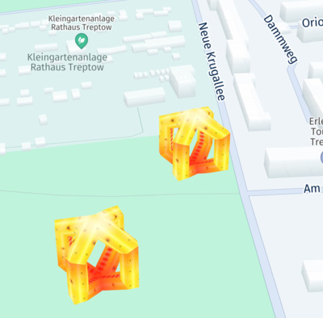
The property isDepthCheckEnabled determines whether the depth of the 3D marker's vertices is considered during rendering and it is set to false by default.
MapMarker3Ditems are always rendered on top of anything else that is visible on the map ifisDepthCheckEnabledis enabled to false.- If
isDepthCheckEnabledis set to true then the 3D marker might be occluded by other map objects like extruded buildings. The methodisDepthCheckEnabledis helpful to depict complex 3D objects like a torus which has outer as well as inner areas.
Like 2D MapMarker items, a MapMarker3D will not change its size when the map is zoomed in or out, but it will rotate together with map.
What to do if you want the 3D marker to scale with the map?
For this, simply use the convenience constructor for MapMarker3D that accepts a RenderSizeUnit. For example, use densityIndependentPixels to prohibit scaling and the resulting marker is created with a fixed size - independent of zoom level. Use RenderSizeUnit with meters to allow scaling.
By setting a list of MapMeasureRange items, the visibility for a MapMarker3D can be adjusted dependent on the current zoom level.
If you want to change the transparency of a MapMarker3D, you can specify an opacity factor: the factor is applied to the alpha channel of the texture of the marker. By setting the renderInternalsEnabled flag you can specify whether to render the internal geometry occluded by its front facing polygons.
Add flat map markers
By default, MapMarker items do not rotate with the map - nor get tilted when the map is tilted. This can be changed by using a MapMarker3D to become flat. In fact, flat map markers are a special case of MapMarker3D items that contain a 0 length on the z-axis in 3D space.
You can create flat MapMarker3D objects by using the convenience constructor that accepts a MapImage parameter. Use RenderSizeUnit with densityIndependentPixels to prohibit scaling. The resulting marker is created with a fixed size - independent of zoom level. Use RenderSizeUnit with meters to allow scaling.
The resulting flat marker will tilt with the map and it will also rotate when the map is rotated.
Uint8List imagePixelData = await _loadFileAsUint8List('assets/poi.png');
MapImage mapImage = MapImage.withPixelDataAndImageFormat(imagePixelData, ImageFormat.png);
// The default scale factor of the map marker is 1.0. For a scale of 2, the map marker becomes 2x larger.
// For a scale of 0.5, the map marker shrinks to half of its original size.
double scaleFactor = 0.5;
// With densityIndependentPixels, the map marker will have a constant size on the screen regardless if the map is zoomed in or out.
MapMarker3D mapMarker3D = MapMarker3D.fromImage(geoCoordinates,mapImage, scaleFactor, RenderSizeUnit.densityIndependentPixels);
_hereMapController.mapScene.addMapMarker3d(mapMarker3D);
In this example, we load a PNG ("poi.png") from the resources and create a MapImage out of it. This MapImage can then be set to a MapMarker instance.
To see the image, we must add the MapMarker to a map scene. Note that the MapImage will be displayed centered on the provided geoCoordinates.
What to do if you want the flat 3D marker to scale with the map?
Create a flat map marker using MapMarker3D and use RenderSizeUnit with meters to allow scaling when zoomed in and out.
How to create a flat 2D map marker from a 2D model
In the next paragraph, we show how a 2D model can be created from a handwritten obj file. As a result, we can create the same flat map marker as in the previous section.
Below you see a 2D example for a plane, that is 2 units large on the x- and y-axis. Since 3D objects can be easily scaled, the size of the model is not important. The origin of the coordinate system in our example lies at the bottom of the plane. This way we can wrap a POI marker asset as texture that points to the provided geographic coordinates.
# A 2 x 2 square, centered upon origin.
v -1 2 0
v 1 2 0
v -1 0 0
v 1 0 0
# 4 vertices
vt 0 1
vt 1 1
vt 0 0
vt 1 0
# 4 texture vertices
vn 0 0 1
vn 0 0 1
vn 0 0 1
vn 0 0 1
# 4 vertex normals
f 1/1/1 3/3/3 2/2/2
f 3/3/3 4/4/4 2/2/2
# 2 faces
For this example, we store the above model definition of a plane into a text file called "plane.obj".
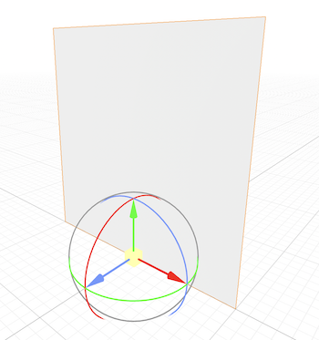
Since the plane is a square, we extend the size of the POI image on the left and right side with a transparent area, so that the image becomes a square. As our original image is a rectangle and not a square it would get distorted when it would be wrapped onto the plane.
Once you have a model defined in the obj format and a texture to wrap around the model, add both files to an assets directory in your project. For example': app/src/main/assets/....
Below we added one obj file and a PNG texture:
- ../assets/models/plane.obj
- ../assets/models/poi_texture.png
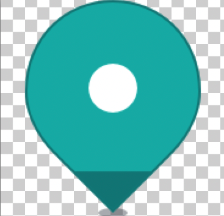
Use the following code to add a flat marker to the map:
// Place the files in the "assets" directory as specified in pubspec.yaml.
// Adjust file name and path as appropriate for your project.
// Note: The bottom of the plane is centered on the origin.
String geometryFilePath = "assets/models/plane.obj";
// The POI texture is a square, so we can easily wrap it onto the 2 x 2 plane model.
String textureFilePath = "assets/models/poi_texture.png";
// Optionally, consider to store the model for reuse (like we showed for MapImages above).
MapMarker3DModel mapMarker3DModel = MapMarker3DModel.withTextureFilePath(geometryFilePath, textureFilePath);
MapMarker3D mapMarker3D = MapMarker3D(geoCoordinates, mapMarker3DModel);
// Scale marker. Note that we used a normalized length of 2 units in 3D space.
mapMarker3D.scale = 50;
_hereMapController.mapScene.addMapMarker3d(mapMarker3D);
Note that we used a normalized length of 2 units in 3D space, therefore we scale the model to be 60x bigger. The result can be seen in the screenshot below.
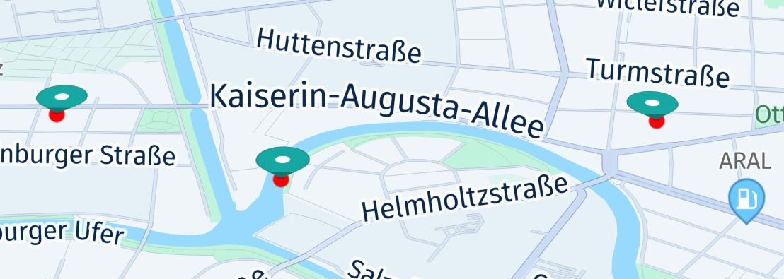
We have added a red circle to indicate the location to which the flat marker is pointing to.
Flat map markers rotate along with the map - and the map marker will also be tilted when the map is tilted, allowing for a 3D-like effect, although its 2D model is flat. Please note that, by default, flat map markers will not change their scale value together with the zoom level of the map: for example, when zooming out the map, a map marker will still be visible - same as for an unflattened MapMarker.
If you want the marker to scale with the map, create a flat map marker as shown in the previous section.
Add a location indicator
Another type of 3D map items is the LocationIndicator. Usually, only one instance is added to the map to indicate the current location of the user's device on the map - including a heading direction.
The HERE SDK provides predefined 3D assets for various use cases. If desired, these can be replaced by setting your own customized MapMarker3DModel for each of the predefined styles.
As all map markers, also a LocationIndicator will not be scaled when the zoom level of the map view will change. However, if the map is tilted, the LocationIndicator will get smaller when it is moved farther to the horizon.
Let's see an example how to add a LocationIndicator onto the map:
void _addLocationIndicator(GeoCoordinates geoCoordinates, LocationIndicatorIndicatorStyle indicatorStyle) {
LocationIndicator locationIndicator = LocationIndicator();
locationIndicator.locationIndicatorStyle = indicatorStyle;
// A LocationIndicator is intended to mark the user's current location,
// including a bearing direction.
// For testing purposes, we create a Location object. Usually, you may want to get this from
// a GPS sensor instead.
Location location = Location.withCoordinates(geoCoordinates);
location.time = DateTime.now();
location.bearingInDegrees = _getRandom(0, 360);
locationIndicator.updateLocation(location);
// Show the indicator on the map view.
locationIndicator.enable(_hereMapController);
}
As you can see above, no asset is required. Instead an IndicatorStyle is set:
LocationIndicator.IndicatorStyle.navigation: An asset designed for navigational use cases.LocationIndicator.IndicatorStyle.pedestrian: An asset designed for handheld usage, that is while sitting or walking.
Both styles indicate the current bearing - which represents the direction the user is heading to. In the example, we set a random bearing value between 0° and 360° degrees. A bearing of 0° degrees is indicating north up, and thus, the arrow is pointing up - as the map is also pointing north up, by default.
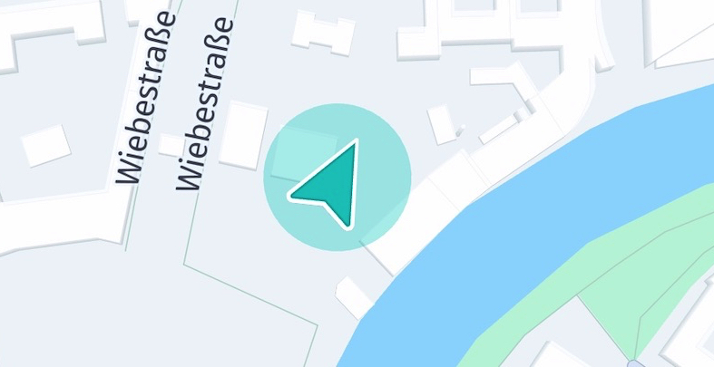
During navigation, a common UX approach is to rotate the map into the direction the user is driving, so that the direction arrow keeps pointing up, although the bearing may change. Usually, during navigation the arrow is expected to point into the direction of the road the user is traveling on.
For a pedestrian use case, the focus lies on the current location of the user. Therefore, the direction is indicated by a much smaller arrow.
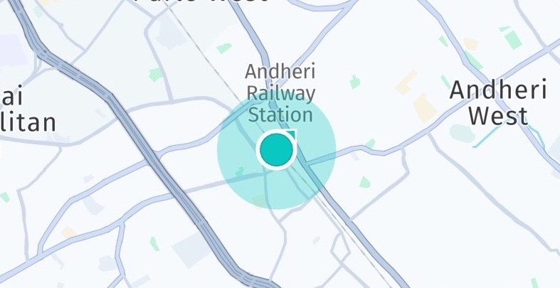
It depends on the application how the bearing value is utilized. Note that the bearing value as derived from the Location object indicates the direction of movement, while alternatively an application may choose to set the bearing in relation to true north (compass mode). If you want the arrow to point to true North, then instead change the bearing value to 0°. Note that such adaptions must be done each time when you receive a new Location update from a location source (see below).
Usually, only one instance of a LocationIndicator is set to the map. By calling updateLocation() its location can be updated and by calling setLocationIndicatorStyle() its style can be updated on-the-fly.
Each style has several associated MarkerType values that define different states, such as a gray state when the GPS signal is lost. When a LocationIndicator is customized, it is important to set all types, otherwise changing a state will have no effect.
The following code snippet shows how to switch between a predefined gray type - indicating an inactive state - and the default state:
var isActive = locationIndicator.isActive;
// Toggle between active / inactive state.
locationIndicator.isActive = !isActive;
If you want to remove the LocationIndicator, call:
// Remove the indicator from map view.
locationIndicator.disable();
Note
The LocationIndicator is not yet pickable and it's always drawn on top of everything else without the need to set a draw order.
For most uses cases, the LocationIndicator should get updated based on frequent Location updates. You can see an isolated usage example as part of the map_items_app example.
Note
The LocationIndicator is always rendered at a fixed altitude near 0. Changing the MapCamera to look at geographic coordinates with an altitude that is higher can cause a problem: if the MapCamera angle is tilted and altitude is too high, the LocationIndicator can disappear from the viewport due to the new perspective.
It is also possible to visualize the horizontal accuracy of a location signal. On top, the LocationIndicator allows to set a custom color of the accuracy halo. By default, accuracy visualization is disabled.
Note
The "navigation_custom_app" example shows how to switch to a custom LocationIndicator and to a different marker type when navigation has stopped.
How to use the MapViewLifecycleListener
The MapViewLifecycleListener can be implemented by any class that wants to listen to the lifecycle of the MapView. The implementation takes care to react on the following events:
lambda_onAttach(MapViewBase mapView): Called when adding the implementing object to the map view.lambda_onPause(): Called when the map view to which the implementing object is attached gets paused (usually, when the app goes into background).lambda_onResume(): Called when the map view to which the implementing object is attached gets resumed (usually, when the app goes into foreground).lambda_onDetach(MapViewBase mapView): Called when removing the implementing object from the map view.lambda_onDestroy(): Called when the map view to which this implementing object is attached to is destroyed.
You can attach and remove the implementing object like so:
- Attach an object to the
MapViewlifecycle:mapView.addLifecycleListener(myObject); - Remove an object from the
MapViewlifecycle:mapView.removeLifecycleListener(myObject);
How to pick map items from a MapView
Below table demonstrates how to pick the map items that are currently pickable:
| MapItems | |
|---|---|
| How to pick | |
| MapPolyline | _hereMapController.pickMapItems(touchPoint, radiusInPixel, (pickMapItemsResult)) |
| MapPolygon | _hereMapController.pickMapItems(touchPoint, radiusInPixel, (pickMapItemsResult)) |
| MapMarker | _hereMapController.pickMapItems(touchPoint, radiusInPixel, (pickMapItemsResult)) |
| MapMarkerClusterGrouping | _hereMapController.pickMapItems(touchPoint, radiusInPixel, (pickMapItemsResult)) |
| Embedded POIs | _hereMapController!.pickMapContent(rectangle2D, (pickMapContentResult)) |
| MapViewPin | GestureDetector(child: Text(...), onTap: () {...}) |
Add map view pins
While map markers offer a seamless way to place items on the map, map pins can be used to pin a native Widget to the map. This can be useful to show information pop-up bubbles (or animated info bubbles), annotations, or customized controls. For example, when tapping on a map marker, you can show a map pin with additional information about the marker location.
Note
A view pin is attached to a map view, but not part of the map itself, since it is composed out of native views. Therefore, when panning the map view, the pins will move together with the map view, but with a slight delay. If you want to avoid this, consider to use MapMarker instances instead - especially, if you want to show multiple instances at once.
Map view pins are of type WidgetPin and can be composed out of multiple Widgets, and each of them can be used just like any other Widget, allowing you to add nested layouts of your choice, attach click handlers, or apply animations, for example.
Widget _createWidget(String label, Color backgroundColor) {
return Container(
padding: EdgeInsets.all(10),
decoration: BoxDecoration(
color: backgroundColor,
border: Border.all(color: Colors.black),
),
child: GestureDetector(child: Text(
label,
style: TextStyle(fontSize: 20.0),
),
onTap: () {
print("Tapped on " + label);
},
),
);
}
You can set a tap gesture listener by making your widget as a child of GestureDetector to find out if a user tapped on a map view pin as shown above.
This creates a Widget holding a decorated Text box. You can also directly add a Text, without adding it to an container. Any combination of widgets - or single widgets - can be added.
Now, all we need to do is to add our little view composition to the map. Note that pins can be added directly to the map - unlike other map items such as polygons or markers:
_hereMapController.pinWidget(
_createWidget("Centered ViewPin", Color.fromARGB(150, 0, 194, 138)), mapCenterGeoCoordinates);
Note that this method returns a proxy object that can be used to control the pinning, for example, to specify an anchor point.
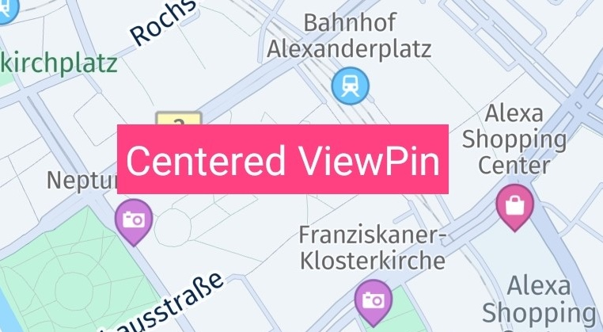
It is also possible to apply animations to the view or attach some other interaction listeners. After a View is attached to the map view, it will behave like any other Flutter Widget - except that it stays fixed on the map and moves along with it when panning or zooming. Note, the WidgetPin does not rotate when you rotate the map - similar to map polylines and map markers.
You can add as many map pins as you like, but you should take performance into consideration. For example, if you want to indicate multiple search results on the map, then map pins are less performant than map markers.
To remove a pin from the map, simply call:
widgetPin.unpin();
If you have added multiple WidgetPin instances, you can access all pins from the _hereMapController object by calling:
// Note: We make a deep copy of the list as we modify it during iteration.
List<WidgetPin> mapViewPins = [..._hereMapController.widgetPins];
mapViewPins.forEach((widgetPin) {
widgetPin.unpin();
});
Usually, map pins are the best choice for showing additional dynamic content for a specific location on the map.
Anchored map view pins
By default, the map pin will be centered on the provided location. But if you want to use a pin without covering the area underneath, what can you do?
For this purpose, you can specify an anchor point, which influences the view's position on the screen in the same way as we have already seen for map markers above:
var widgetPin = _hereMapController.pinWidget(
_createWidget("Anchored MapViewPin", Color.fromARGB(200, 0, 144, 138)), mapCenterGeoCoordinates);
widgetPin?.anchor = Anchor2D.withHorizontalAndVertical(0.5, 1);
This will place the view centered horizontally on the location, while the bottom of the view is matching the provided coordinate. As visualized in the screenshot below, the map pin sits on a map circle object that indicates the provided center location of the map pin.
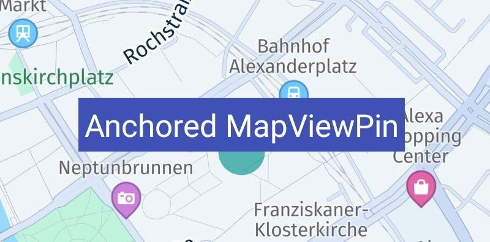
Anchor points provide a convenient way to specify the location where the view should be rendered: the top-left corner equals an anchor point of (0, 0) while the bottom-right corner equals an anchor point of (1, 1). Independent of how large the view is, the point that is half the width or height will always be 0.5 - this is similar to the concept of normalized texture UV-coordinates. For an illustration, please see the map markers section above.
By default, the anchor point is (0.5, 0.5), which will render the view centered on the location. If the bottom-right corner of the view should point to the set GeoCoordinates location, then the anchor point must be set to (1, 1).
Since a view can be of any size, the maximum width and height will have a value of 1. The dimension of the view is calculated after it is fully inflated. If you know the exact dimensions of your view, you can easily calculate a specific point inside the view in relation to the maximum value of 1.
Note
While offsets allow you to specify the translation along the x- and y-axis, an anchor point defines the relative position of the top-left corner of a rectangle such as a view. In relation to the view's boundaries, it defines the point where the view is centered on the provided GeoCoordinates location.
Try the example app
All of the above code snippets can be seen in our "map_items_app" example which can be found on GitHub for the platform of your choice.